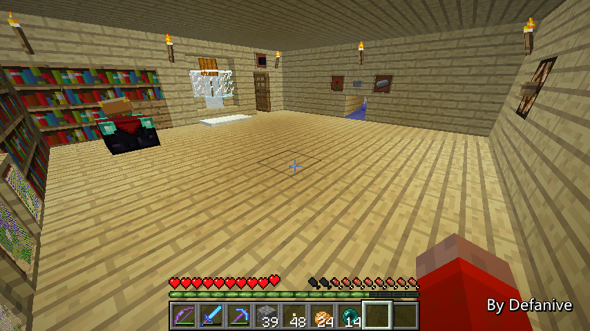
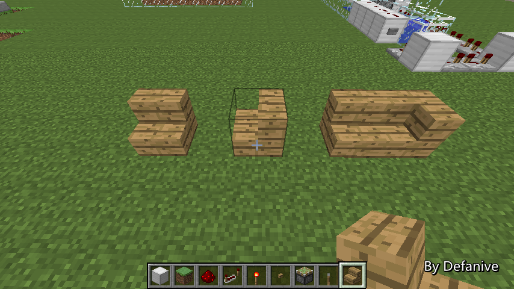
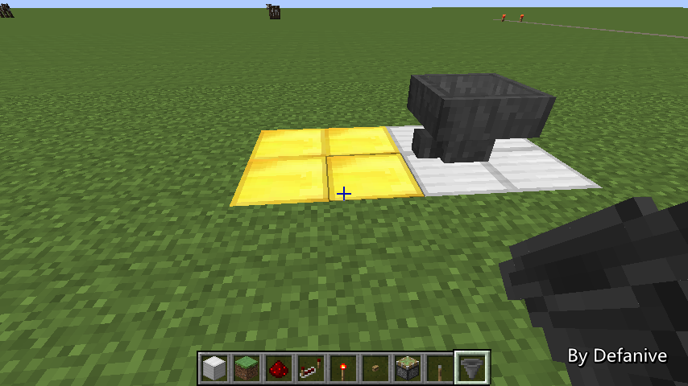

首页
上一页
275
276
277
278
279
280
280
281
282
283
284
285
下一页
末页
defanive2
无尽黑夜
14
由于按钮所在方块的后方的下方是活塞推动的方块
所以没办法放任何红石或者中继器
也就是说我们需要把信号先给一个效应器
再用效应器重新输出一个信号
在这里使用了相对的投掷器和漏斗，并在投掷器里有一个物品
这样当按钮按下时，投掷器就会把物品传送到漏斗中
而比较器也因此发出了信号
4tick之后漏斗会把物品重新送回发射器，重置整个装置的状态
——来自 MCLive
25044楼
2014-01-12 19:44
defanive2
无尽黑夜
14
现在的信号是4tick的，但是要实现粘性活塞切换方块位置
就需要把信号缩短到1tick
在这里的电路设计非常简单
比较器把信号给到粘性活塞所附属的方块上
也就会给下方的红石充能，红石给到背面的活塞，开始推动
同时红石也给到火把上，火把在1tick后就会让上方的活塞开始收回
开始收回后红石也就失去了充能
因此给到背面活塞的信号也就只有1tick
——来自 MCLive
25046楼
2014-01-12 19:49
defanive2
无尽黑夜
14
整个电路也就是这样了，非常简单
——来自 MCLive
25047楼
2014-01-12 19:50
defanive2
无尽黑夜
14
考虑到狗窝已经基本没用过了
所以就给拆掉了
而且也给下面的电路腾出了空间
——来自 MCLive
25048楼
2014-01-12 19:54
defanive2
无尽黑夜
14
接下来的这一层楼也进行了很多改造
非常显而易见
——来自 MCLive

25049楼
2014-01-12 19:57
defanive2
无尽黑夜
14
最明显的改变就是雪人啦
现在把雪人卡在了3格高的墙中间
并且是在2方块的中间，同时产2片雪
由于背面就是实验室的铁块，背景比较突兀
不过对比之前的3块玻璃感觉还是好看一点 = =
——来自 MCLive
25052楼
2014-01-12 20:00
defanive2
无尽黑夜
14
而附魔台最右下角的书柜被搬到了墙里面
——来自 MCLive
25053楼
2014-01-12 20:01
defanive2
无尽黑夜
14
并且可以切换附魔台的状态
普通情况下是LV30的附魔
而切换状态后可以进行LV1的附魔
——来自 MCLive
25054楼
2014-01-12 20:02
defanive2
无尽黑夜
14
而开关在哪里呢？
开关就隐藏在这方块里面
右键这个方块就可以切换状态
——来自 MCLive
25055楼
2014-01-12 20:03
defanive2
无尽黑夜
14
实际上拆开结构之后就是下面隐藏了一个拉杆
但是这个拉杆是如何透过一个方块被激活的呢？
——来自 MCLive
25056楼
2014-01-12 20:05
defanive2
无尽黑夜
14
这是利用了一个非常有用的BUG
当两个图中的台阶放在一起时
会像右边一样连接在一起
——来自 MCLive

25064楼
2014-01-12 20:07
defanive2
无尽黑夜
14
尽管右边横着的阶梯外观改变了
但是其碰撞箱仍然是保持横着的
也就是说这一个部分其实仍然是空的
通过这个部分就可以指向背面的方块
——来自 MCLive
25074楼
2014-01-12 20:09
defanive2
无尽黑夜
14
因此附魔台处的原理就是这样
通过转角的阶梯实际上还是一样的碰撞箱
可以操作到下方的拉杆
也就控制了电路
——来自 MCLive
25083楼
2014-01-12 20:11
defanive2
无尽黑夜
14
这一层右侧的另外一处改变，移除了之前的一堆炼药台
并且在墙上增加了一个开关
由红石灯和按钮组成，每次按都会切换红石灯的状态
——来自 MCLive
25086楼
2014-01-12 20:13
defanive2
无尽黑夜
14
这个开关是什么呢，其实是伪和平开关
在开启的情况下，会产生伪和平效果
不再进行自然刷怪
在晚上和洞穴里也可以安全活动
PS 虽然不进行自然刷怪
但是刷怪笼仍然会刷的，因此伪和平下探洞穴时如果见到怪物
那么就可以肯定是找到地牢了
当然由于仍然是普通难度，饥饿仍然会掉，无饥饿之后仍然会掉血
——来自 MCLive
25089楼
2014-01-12 20:18
defanive2
无尽黑夜
14
这个伪和平开关是全世界范围的
也就是说在开启状态下无论去到哪里都不会刷怪
非常适合挖天然矿洞和外出探险
——来自 MCLive
25091楼
2014-01-12 20:20
defanive2
无尽黑夜
14
这是一个相对比较大的工程（也是非直播期间的唯一一个大工程）
激励我制作这个装置的主要原因是小黑进行的自然破坏
这个世界已经玩了很久了，平常小黑搬沙搬草地
产生的破坏力逐渐积累实在非常蛋疼
所以最后决定还是制作这个装置
——来自 MCLive
25093楼
2014-01-12 20:23
defanive2
无尽黑夜
14
如果大家还记得END的伪和平装置的话
那么原理是非常类似的，同样是inactive加载一个chunk
并且这个chunk中包含超过80只怪物
这样这些怪物不会despawn并且被算入刷怪上限
达到了刷怪上限自然就不进行刷怪了
PS 上次凋零刷黑曜石工程把END家搞得一塌糊涂
在非直播期间也都修好了
——来自 MCLive
25102楼
2014-01-12 20:29
defanive2
无尽黑夜
14
但是在主世界做伪和平有一个很严重的问题
inactive加载的chunk在退出重进游戏后会被卸载
END里触发inactive加载电路的方式是检测玩家进入END
这样玩家每次进入END都会立即激发伪和平装置
而在END里我都不会退出重进游戏，因此整个END都是安全的
但是在主世界里退出游戏是不可避免的
而重进游戏之后inactive加载的chunk就不再被加载了
这时伪和平装置就需要再手动打开一次才会生效
那么如果在野外晚上重进游戏的话就会非常危险
PS Zipkrowd也有伪和平装置，不过在服务器上做的话非常简单
因为服务器基本不重启，也就是说根本不会导致chunk卸载
按一次按钮就可以保持全服务器永久伪和平
——来自 MCLive
25106楼
2014-01-12 20:34
defanive2
无尽黑夜
14
解决方法就是使用指向另一个区块的漏斗
漏斗传送物品的特性会让漏斗每4tick检查一次所指向的方块
由于所指向的方块在金块这个区块里
因此金块这个区块就会被加载
如此从spawn chunks一直使用这种漏斗指向加载
就可以让无限数量的区块在进入存档后被自动加载
在生存里我用近4组的漏斗一直加载到3000+以外的一个区块
那个区块中包含了120只洞穴蜘蛛（从刷怪笼中刷的）
这样每次进入游戏之后，约10秒后就会进入伪和平模式
避免了每次进入游戏都要按一下伪和平按钮的麻烦
——来自 MCLive

25111楼
2014-01-12 20:38
defanive2
无尽黑夜
14
如果有看我YY直播的话，会记得我在漏斗上也同时放了一个熔炉
这个熔炉有什么用呢？
漏斗每game tick都会检查上方有没有物品entity
如果有的话就会吸进来
而近4组的漏斗被加载并且不断的检查entity肯定会导致游戏卡顿
而如果漏斗上方有一个容器的话，那么就不会进行entity检查
容器检查相对entity检查来说基本不卡游戏
因此造这4组熔炉也另外花了32组的石头
——来自 MCLive
25114楼
2014-01-12 20:41
defanive2
无尽黑夜
14
而伪和平模式要怎么关闭呢？
直接红石信号给到漏斗即可
当漏斗收到红石信号了，自然就不会进行送物品
也自然不会进行区块加载了
因此只要一个漏斗被信号阻隔了
在下一次进游戏之后就不再是伪和平模式了
PS 开启伪和平模式是立即生效的
但是关闭则需要重进游戏才生效
这是由于目前MC除了亲身接近并离开，还没有卸载chunk的方法
因此只能用退出游戏这种方法强制chunk被卸载
——来自 MCLive
25119楼
2014-01-12 20:45
defanive2
无尽黑夜
14
而和平模式开关背后的电路也很简单
按钮的信号首先给到一个T-flipflop上
这种T-flipflop设计是漏斗和3个发射器形成的物品循环
每次接受到一个信号之后就切换一次比较器的信号
——来自 MCLive
25120楼
2014-01-12 20:49
defanive2
无尽黑夜
14
接下来再把输出给到红石灯旁边的墙即可
同时输出也延长给到加载区块的漏斗上
这样就实现了控制伪和平模式开关
——来自 MCLive
25122楼
2014-01-12 20:50
defanive2
无尽黑夜
14
在有了伪和平之后进行了很多次天然矿洞挖矿
没有刷怪的危险可以很安全的挖矿
并且找到了很多个地牢和废弃矿洞
在近乎消耗完所有红石储备之后
终于把红石储备提高到1箱红石以上了
PS 虽然说探天然矿洞没有挖人工矿道快
但是相对来说更加有趣，不会挖2分钟就已经觉得无聊了
而且地牢里箱子的产物也很不错
——来自 MCLive
25123楼
2014-01-12 20:53
defanive2
无尽黑夜
14
而接下来下一层地下室也被大改了一遍
由于需求小，西瓜和南瓜田都被移到了墙边
并且更加美观了
PS 这一层目前显得相当空荡
墙上应该还可以再放点东西
——来自 MCLive
25124楼
2014-01-12 20:56
defanive2
无尽黑夜
14
而左边则有一个半自动的炼药装置
可以直接从箱子里取速度II药水和抗火药水
上方的木质按钮按下之后会自动炼3瓶药水
没有做成全自动的原因是平常药水用量非常小
完全不需要全自动长期炼制
——来自 MCLive
25125楼
2014-01-12 20:58
defanive2
无尽黑夜
14
自动炼药的基础是炼药台同样可以被漏斗和投掷器操作
上方的漏斗会给炼药台的药材格增加药材
侧面的漏斗可以放入水瓶
而下方的漏斗可以从炼药台中取出水瓶
——来自 MCLive
25126楼
2014-01-12 21:00
defanive2
无尽黑夜
14
因此一个非常简单的炼药台结构就是这样
一级一级的不断进行分布炼药
右边是水瓶+地狱孢子->awkward药水
中间是awkward+糖->速度药水
左边是速度+萤石->速度II药水
只要电路控制正确，完全可以做出半自动/全自动
——来自 MCLive
25127楼
2014-01-12 21:02
defanive2
无尽黑夜
14
而最终的电路结果是如此
虽然从很多方面来说都不算是特别好的搬自动炼药装置
但是其优点也是非常明显的
电路结构重复性高，非常容易建造
——来自 MCLive
25132楼
2014-01-12 21:04
首页
上一页
275
276
277
278
279
280
280
281
282
283
284
285
下一页
末页